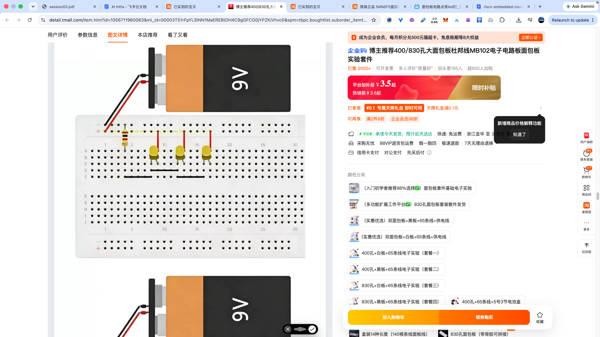
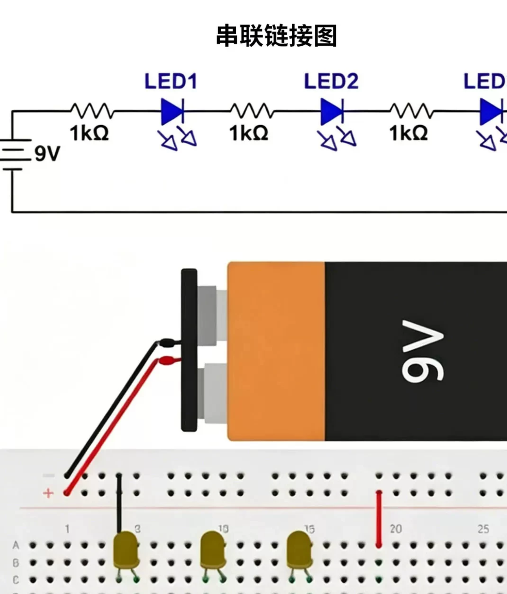
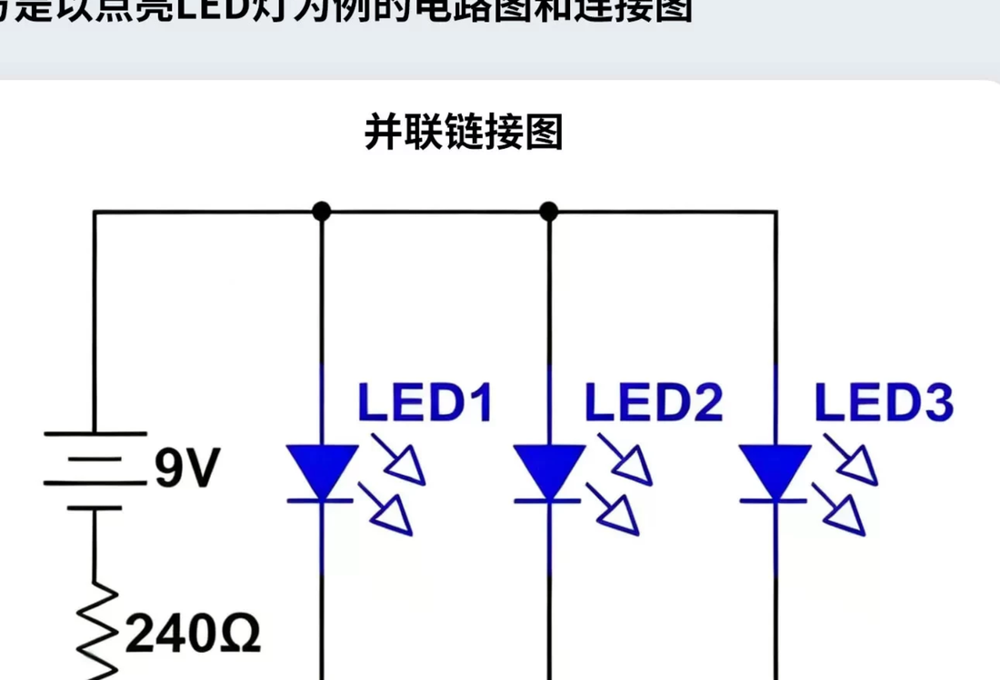
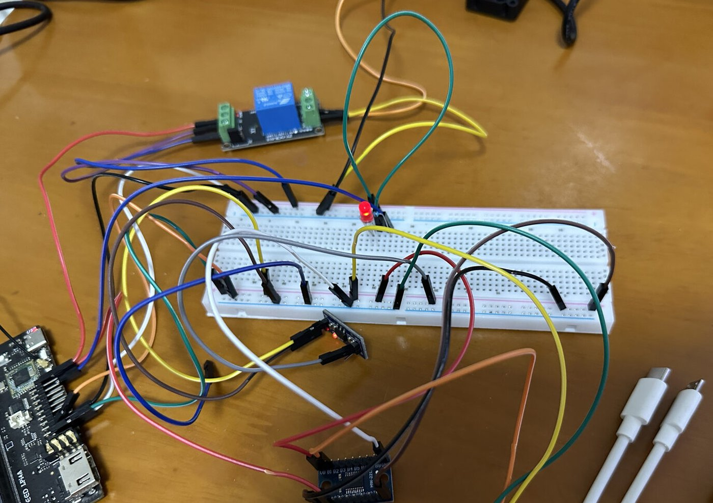
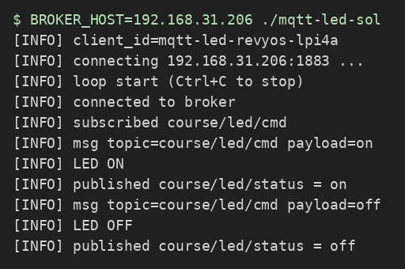
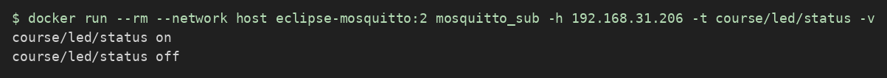
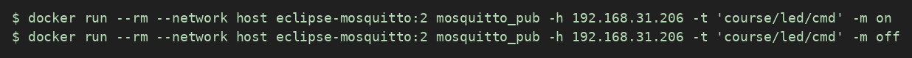
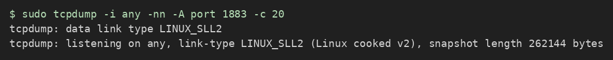

本章实验 · 三个实验
本章三个实验一览
第五章的主实验要接真 LED、连 Broker、写 mosquitto 回调。为了不一把抓，拆成三个递进实验：实验一、实验二纯软件、无接线、无 Broker，把「精确匹配 on/off」和「改灯后再发 status」这两段先练会；实验三再接到真 GPIO 与真 MQTT。
| 实验 | 练什么 | 器材 | 源码目录 |
|---|---|---|---|
| 实验一 on/off 精确解析 |
写 parse_led_cmd / status_payload；断言卡死大小写与空格变体 |
无 | code/led-cmd-parse/ |
| 实验二 虚拟灯命令环 |
stdin 模拟下行：on/off → 改虚拟灯 → 打印 [STATUS] |
无 | code/virt-led-repl/ |
| 实验三 MQTT 远程控灯 |
接线 + libmosquitto + libgpiod；把实验一/二的逻辑接到真灯与 Broker | 外接 LED、限流电阻、Broker | code/mqtt-led/ |
实验一 · on/off 精确解析（led-cmd-parse）
实验三 on_message 里最容易写松的是载荷匹配：写成忽略大小写或带空格也能过，联调时却对不上课堂约定的精确 on/off。本实验把解析抽出来，用断言卡死。源码 chapters/ch05/code/led-cmd-parse/，只实现 parse_led_cmd 与 status_payload。
步骤
# 主机，或先 scp 到板子再进目录 $ cd chapters/ch05/code/led-cmd-parse # 板上：cd ~/led-cmd-parse $ make $ ./build/led-cmd-parse # 未实现 → SOME FAIL（预期）
打开 src/led_cmd.c，按头文件契约实现：精确 "on"→1、"off"→0，其他→-1；status_payload 返回静态字符串 "on"/"off"。
$ ./build/led-cmd-parse # 期望： # ok parse on/off 精确匹配 # ok status_payload 返回 on/off # ALL PASS # 对照：make sol && ./build/led-cmd-parse-sol
本实验成功判据：ALL PASS；能口头说「实验三里 payload 必须精确等于 on/off，大小写与尾空格都不算」。
实验二 · 虚拟灯命令环（virt-led-repl）
实验三的另一半是「先改灯、成功后再发 status」。本实验用 stdin 模拟 MQTT 下行，没有 Broker、没有 GPIO。源码 chapters/ch05/code/virt-led-repl/，只实现 apply_cmd——签名与实验三回调里的决策顺序一致。
步骤
# 主机，或先 scp 到板子再进目录 $ cd chapters/ch05/code/virt-led-repl # 板上：cd ~/virt-led-repl $ make $ printf 'on\noff\nbad\nquit\n' | ./build/virt-led-repl # 未实现：全是 [TODO] → 预期
打开 src/virt_led.c：精确 on/off 时改 *led_on，打印 [LED] ON/OFF 与 [STATUS] on/off；其他打印 [ERR] bad cmd。
$ printf 'on\noff\nbad\nquit\n' | ./build/virt-led-repl # 参考（make sol 一致）： # [LED] ON # [STATUS] on # [LED] OFF # [STATUS] off # [ERR] bad cmd # bye led=OFF
本实验成功判据：输出与参考一致；能口头说这套顺序平移到实验三就是 led_set 成功后再 publish_status。
实验三 · MQTT 远程控灯（真 GPIO + Broker）
把实验一的 parse_led_cmd / status_payload、实验二的「改灯→发 status」顺序接到真 mosquitto 与真外接 LED。工程 chapters/ch05/code/mqtt-led/ 已通过 Makefile 链上实验一的源文件；你在 on_message 里调用它们，并实现 publish_status。
外接 LED 怎么接
默认脚位：丝印 IO1_4（gpiochip5 line 4）。限流电阻串在 GPIO 与 LED 正极之间；LED 短脚回电源轨「−」（GND）。风扇与 DHT 仍占 IO1_5 / IO1_6。





on 后外接 LED 亮chapters/ch05/manuals/LED_UR5202D摘录.md（极性 / VF）、电阻_100欧姆摘录.md、LED_串联并联示意.md。
步骤
1. 查 Broker IP 并配置
在跑 Mosquitto 的主机上查本机局域网 IP（与板子同一网段的那个）：
$ hostname -I # 记下该地址，下文记为 BROKER_IP
把地址交给板端程序（环境变量优先于源码默认值）：
- 推荐：板端启动时写
BROKER_HOST=BROKER_IP ./mqtt-led。 - 或编辑
main.c里的DEFAULT_BROKER_HOST后重新make。
其余宏按需核对：
BROKER_PORT：默认1883（MQTT 明文常用端口）。TOPIC_CMD/TOPIC_STATUS：默认course/led/cmd与course/led/status；若课堂统一改了主题，以板书为准并保持发布端与订阅端一致。GPIO_CHIP_PATH、LED_LINE：与外接 LED 接线一致。默认LED_LINE=4（丝印IO1_4）；IO1_5/IO1_6留给风扇与 DHT。Broker 填主机局域网 IP；板上的127.0.0.1只指向板自己。
本步成功判据：你能说出本机查到的 Broker IP 与两个主题名；知道用环境变量或默认宏二选一配置。
2. 补全下行控灯与上行状态发布
术语提醒：下行指从电脑终端发命令到板子控硬件；上行指板子把当前状态发回 Broker，供别人订阅。
-
在
on_message中处理命令载荷
脚手架已把 payload 拷进buf。调用实验一的parse_led_cmd(buf)：返回 1/0 时led_set，成功后再publish_status(status_payload(...))；返回 -1 打[ERR]不改灯。
成功样子：主机 pubon后板端日志有收包记录，外接 LED 亮；puboff后灯灭；pubON应报错（精确匹配）。 -
实现
publish_status
用mosquitto_publish向TOPIC_STATUS发布当前灯态字符串。成功打[INFO]，失败打[ERR]（可参考 mosquitto 返回值与mosquitto_strerror）。
成功样子：另一台机器上mosquitto_sub -t course/led/status -v能看到与灯态一致的 payload。
3. 编译并部署
两条路径任选其一（产物都须是 RISC-V ELF）：
# 路径 A：在荔枝派上原生编译 $ cd chapters/ch05/code/mqtt-led $ make clean && make $ file mqtt-led # 应为 RISC-V ELF $ BROKER_HOST=BROKER_IP ./mqtt-led # 路径 B：在 x86 主机交叉编译后再拷到板 $ . ~/venv-gnu-ruyisdk/bin/ruyi-activate $ cd chapters/ch05/code/mqtt-led $ make clean && make CROSS_COMPILE=riscv64-ruyisdk-linux-gnu- $ file mqtt-led # 应为 RISC-V ELF $ scp mqtt-led user@board-ip:~/ $ ssh user@board-ip 'BROKER_HOST=BROKER_IP ./mqtt-led'
把命令里的 BROKER_IP 换成你在第 1 步 hostname -I 记下的地址。可选：板端设 MQTT_CLIENT_ID 自定义客户端名（默认 mqtt-led-<主机名>）。启动后应看到正在连接 Broker、连接成功、以及已订阅命令主题的日志。

course/led/cmd → 收到 on → LED ON → 发布 course/led/status = on4. 联调（固定顺序，全部要做）
-
在主机开一个订阅窗口，盯住状态主题（
BROKER_IP仍用第 1 步查到的值）：$ mosquitto_sub -h BROKER_IP -t 'course/led/status' -vmosquitto_sub的意思：连上 Broker，一直听某个主题；有新消息就打印出来。-v会把主题名和载荷一起打出来。
图 7 主机订阅状态主题：先后收到 course/led/status on与off（上行验收） -
再开一个窗口发下行命令：
$ mosquitto_pub -h BROKER_IP -t 'course/led/cmd' -m on期望：外接 LED 亮；订阅窗口出现状态 payload（如on）。 - 再发
-m off：灯灭，状态同步为 off。
图 8 主机下行：向 course/led/cmd发on/off - 另开一个电脑终端，用
mosquitto_pub连同一 Broker，对同一命令主题再发一次 on/off，确认灯有动作。 -
抓包（必做）：在主机或板端（以讲义 5.3 与课堂约定为准，通常在能看到板↔Broker 流量的那一侧）先开抓包，再触发一次 publish：
$ sudo tcpdump -i any -nn -A port 1883 -c 20
图 9 先开 tcpdump，过滤 port 1883，再去 pub 一条命令成功时，摘要行里应能看到板子 IP 与 Broker IP、目的端口
1883，以及 TCP 标志。示例（本课联调实录，IP 按你的局域网会不同）：19:12:32.626647 ens33 In IP 192.168.31.179.47778 > 192.168.31.206.1883: Flags [P.], ... length 2 19:12:32.627119 ens33 Out IP 192.168.31.206.1883 > 192.168.31.179.47778: Flags [.], ack 2, ... 19:12:32.627601 ens33 Out IP 192.168.31.206.1883 > 192.168.31.179.47778: Flags [P.], ... length 2
你应当在 tcpdump 输出里看到什么：- 过滤条件
port 1883命中的包（MQTT 默认明文端口）； - 用
-nn看到的 IP 地址与端口，对应「这是 TCP 连接上的流量」； - 用
-A打印的 ASCII 区，有时能瞥到主题名或on/off一类载荷片段。
- 过滤条件
验收
| 实验 | 项 | 通过条件 | □ |
|---|---|---|---|
| 一 | 解析 | led-cmd-parse 打印 ALL PASS | |
| 二 | 虚拟灯 | 喂 on/off/bad/quit 输出与参考一致 | |
| 三 | 编译 | 板端或交叉产物为 RISC-V ELF | |
| 三 | 下行 | pub on/off 外接 LED 亮灭正确 | |
| 三 | 上行 | 状态主题订阅端能看到对应 payload | |
| 三 | 抓包 | 保存含 1883 的 tcpdump 片段；能口述 MQTT→TCP→IP 分层 |